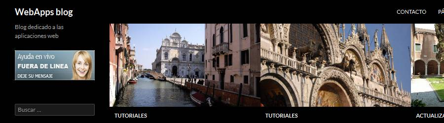
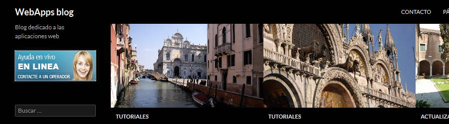
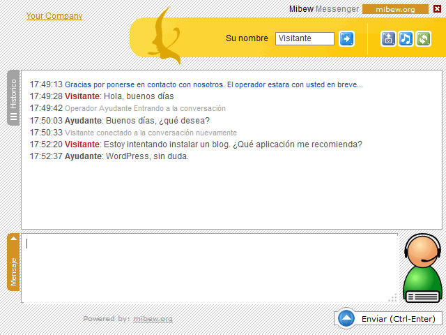
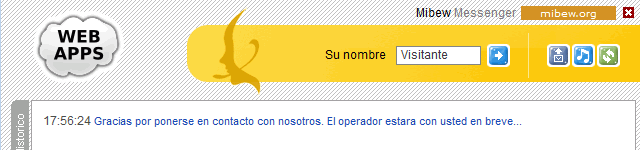
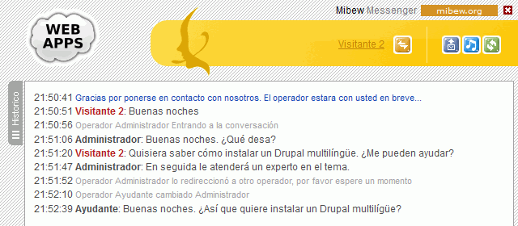
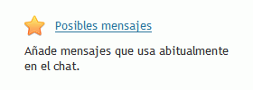
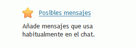

Crear en WordPress un widget que contenga un botón HTML de Mibew. El código de botón HTML se obtendrá en Miweb (botón azul).
Hacer una captura de toda la pantalla:

5. Crear un operador
Crear un operador que se llame Ayudante, con nombre de usuario ayudante y contraseña ayudante. Utilizar esta imagen de avatar:
Conectar el operador Ayudante para que pueda atender peticiones.
Hacer una captura de toda la pantalla:

Abrir una conversación entre un visitante del blog y el ayudante.
Hacer una captura de toda la pantalla:

6. Personalizar la ventana de chat
Personalizar la ventana de chat de manera que se muestre el icono de WebApps y que al hacer clic en el logo se abra el blog.
Hacer una captura de toda la pantalla con el cursor sobre el icono de WebApps de manera que se vea en la parte inferior de la ventana la dirección a la que enlaza la imagen:

7. Transferir una consulta
Contestar una petición como administrador y transferirla al ayudante para que la atienda.:
Hacer una captura de toda la pantalla:

8. Modificar la traducción
Corregir la errata en la traducción:

Hacer una captura de toda la pantalla y del fichero de traducción modificado:

9. Copia de seguridad
Entrar en phpMyAdmin como usuario iwb_mibew_1, elegir la base de datos iwb_mibew_1 y exportar la tabla con el método rápido al fichero iwb_mibew_1.sql.
 y que al hacer clic en el logo se abra el blog.
y que al hacer clic en el logo se abra el blog.